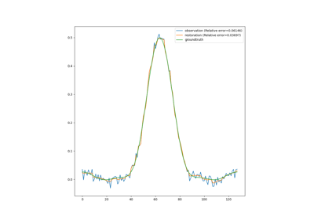

How-To Guides#
Below is a gallery of guides on how to use the various features of the library.


Support vector representation of function values in CUQIpy geometries and samples
Support vector representation of function values in CUQIpy geometries and samples


Setting a Bayesian model with multiple likelihoods
Setting a Bayesian model with multiple likelihoods

How to sample with MYULA


Uncertainty Quantification in one-dimensional deconvolution
Uncertainty Quantification in one-dimensional deconvolution